Liste 2 – Die Mitarbeitervertreter
Unsere Kandidaten
#1
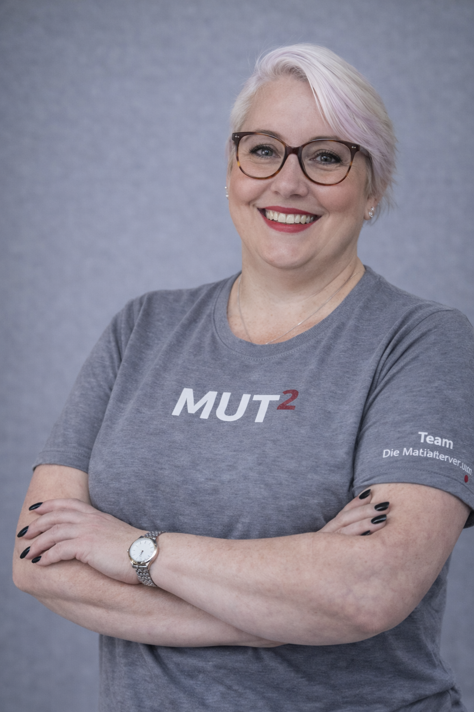
Yvonne Jones
H · HGS · Teamlead Sustainability
#2
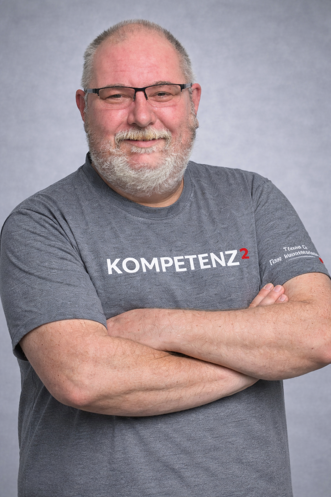
Andreas Brockhaus
H · HRW · freig. Betriebsrat
#3
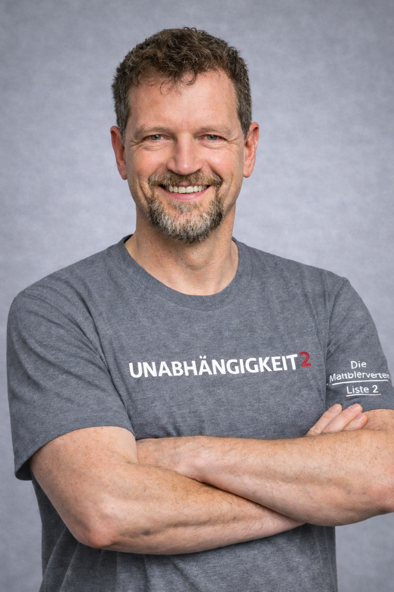
Bernhard Moritz
H · HSI · Magazine Specialist
#4
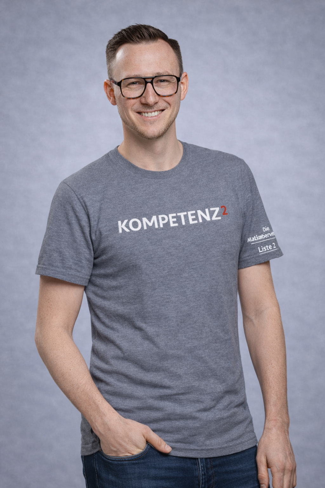
Marius Lux
HAT · HAT PSRA · Specialist PSRA
#5
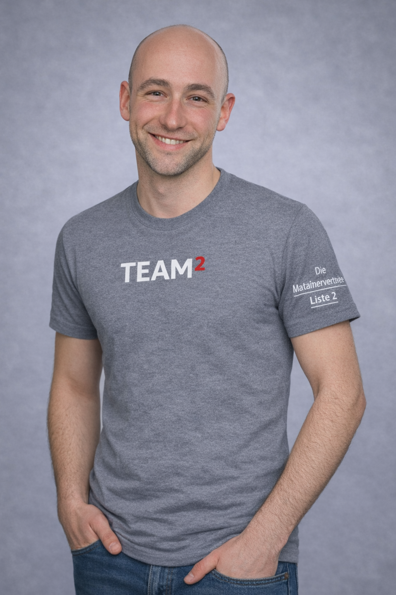
René Hügen
H · HSI · Electronics Installer
#6
Kevin Becker
HAT · AOE-D/L · Operator
#7
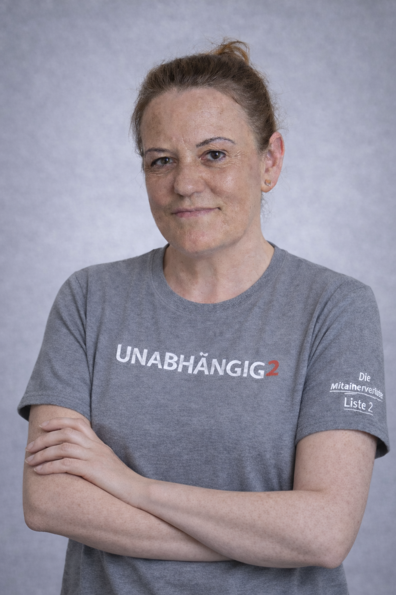
Simone Uslu
HAT · AOE-D/L · Operator
#8
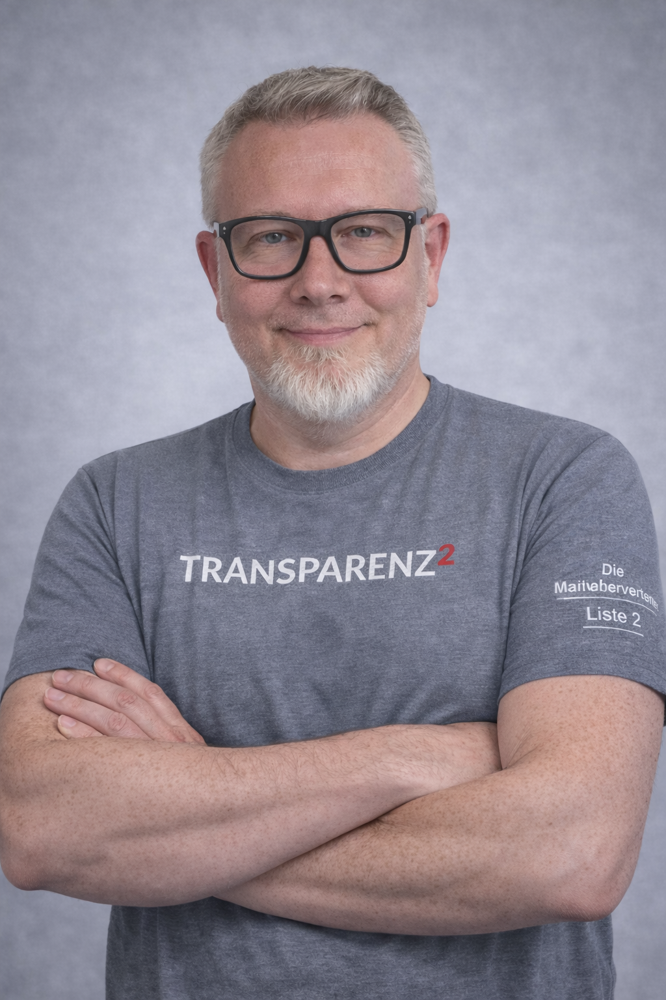
Martin Kusch
HCB · GSU · Linien Technician
#9
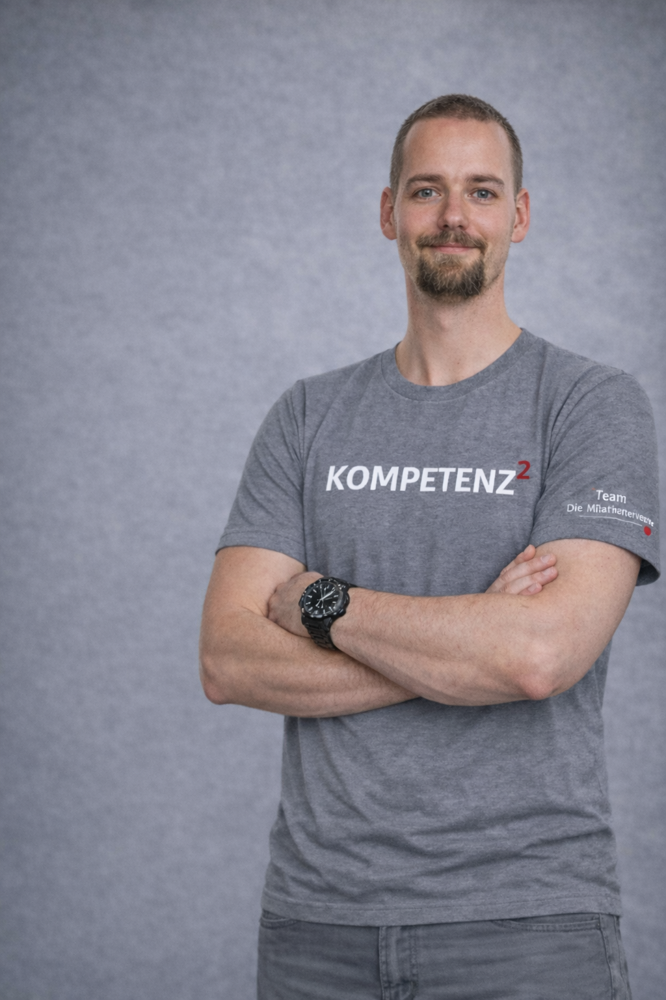
Tim Jachertz
HAT · AOE-D/L · Operator
#10
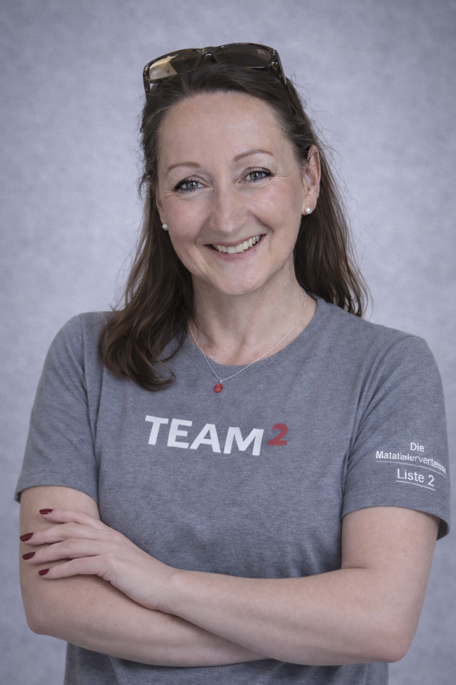
Kerstin Kolodziej
H · HSG · Coordinator Events
#11
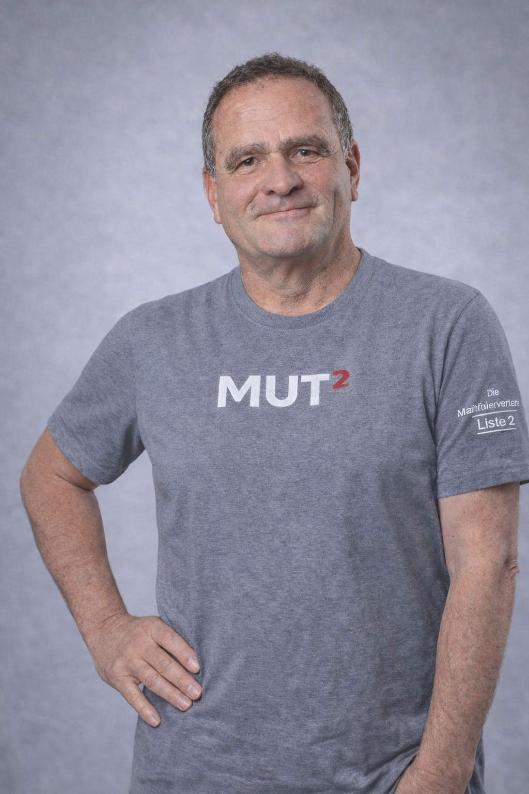
Michael Flemm
H · HSI · Magazine Specialist
#12
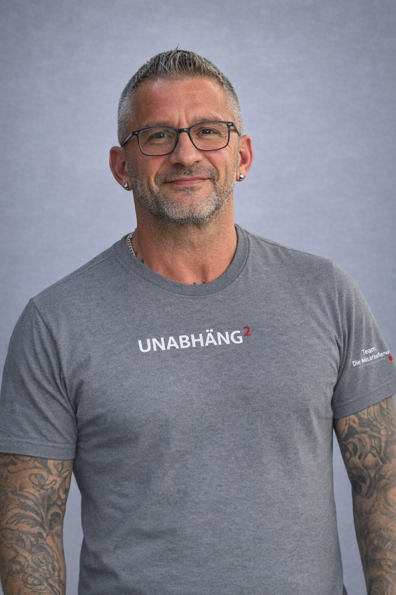
Erol Yagan
H · HS · Workshop Helper